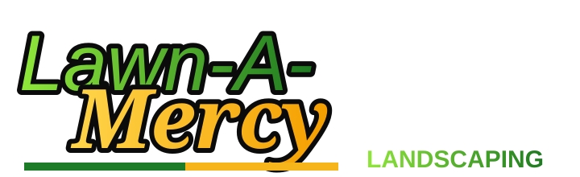

Lawn-A-Mercy website
Full website:
https://scasimir2021.github.io/lawn-a-mercy/

QR route: https://scasimir2021.github.io/lawn-a-mercy/go/?to=website

← Full websiteOfficial quick links
The website code opens the complete Lawn-A-Mercy site. The social code opens the current profiles. Both are permanent routes you can print, text, or place on a flyer.
Full website:
https://scasimir2021.github.io/lawn-a-mercy/
QR route: https://scasimir2021.github.io/lawn-a-mercy/go/?to=website
Full social link:
https://scasimir2021.github.io/lawn-a-mercy/go/?to=socials
Individual profiles can change later without replacing this printed QR.
Print this page or download either PNG. The complete-site QR resolves through Lawn-A-Mercy’s stable route before opening the canonical homepage.